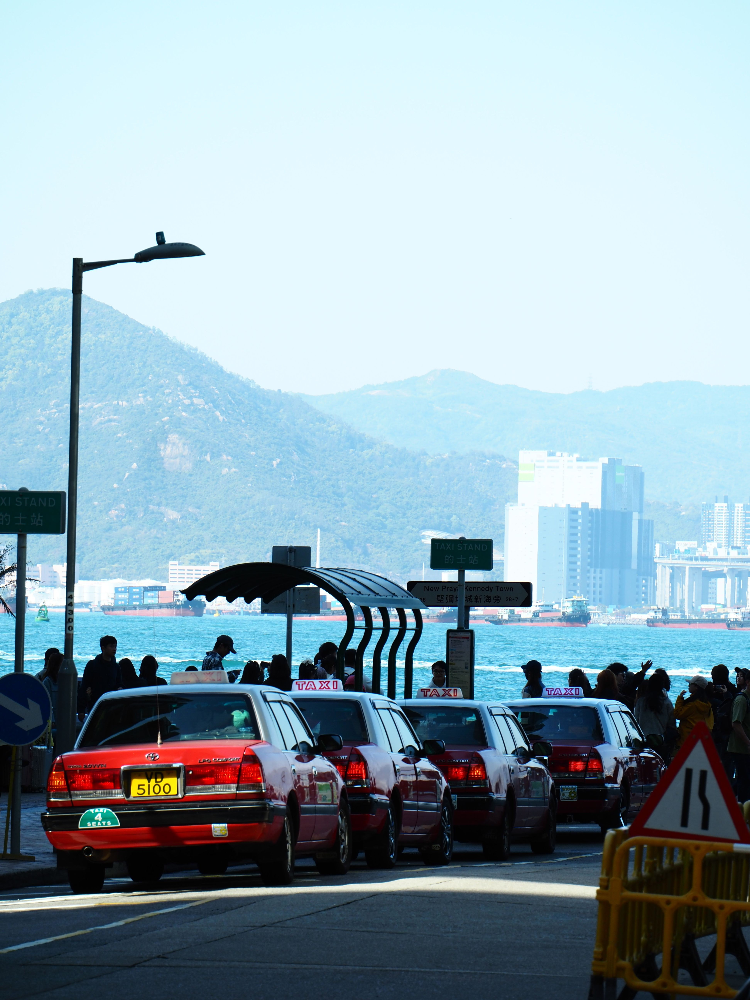

Airport Access
Most visitors arrive through Taniti's small airport, which currently accommodates small jets and propeller planes.
Traveling around Taniti is simple, whether you're arriving for the first time or returning for another unforgettable vacation.

Visitors can arrive by air or cruise ship and explore the island using buses, taxis, rental cars, bicycles, or by walking through many areas of Taniti.
Most visitors arrive through Taniti's small airport, which currently accommodates small jets and propeller planes.
Cruise ships dock at Yellow Leaf Bay and bring visitors looking to experience the island's attractions.
Public buses operate throughout Taniti City from early morning until late evening, providing an affordable transportation option.
Taxis are available throughout the island and provide convenient transportation for visitors.
Rental cars are available near the airport for travelers who prefer flexibility during their stay.
Much of Taniti City is walkable, and bicycles are a popular way to explore the island at a slower pace.